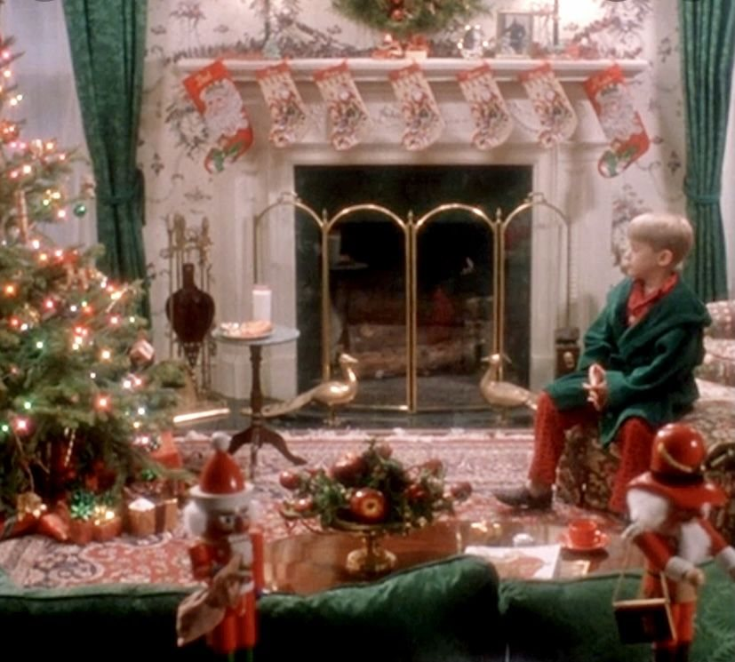

Звезда пропала
Офис, зелёная рука, пустое место у ёлки. Ведущий объявляет миссию.
Новогодняя кинокомедия в вашем офисе
Три кабинета становятся знакомыми киновселенными. Коллеги — героями одной истории. А праздник — фильмом, который хочется пересматривать.
Заглянуть на съёмочную площадку
Гринч похитил новогоднюю звезду. Без неё праздник не начнётся. Команде Colvir предстоит найти след, вернуть пропажу и доставить её в общий зал до праздничного отсчёта.
На пути — сцены по мотивам любимых фильмов. Короткие действия понятны с первого раза: выглянуть из-за двери, удивиться находке, рассмешить Гринча или поднять карточку с пожеланием.
Одна звезда, посылка с красной лентой и записки переходят из кабинета в кабинет. Поэтому все эпизоды складываются в историю с началом, приключением и общим финалом.
Крупная золотая звезда из картона или лёгкого материала. Её хорошо видно в кадре, удобно передавать коллегам и вынести в финале.
Фотографии ниже — визуальные референсы Pinterest: кадры фильмов и примеры оформления. Показываем, какие детали предлагаем взять для офиса; это не фотографии будущего мероприятия и не утверждённый комплект декора.
В кабинете осталась посылка Гринча. Добраться до неё мешает шуточная сигнализация, которую соорудил слишком предусмотрительный хранитель офиса. Гости заглядывают из-за двери, прячутся за подарками и осторожно проходят маршрут. В коробке — зелёный след и адрес следующей локации.
Ладони у лица. Подозрительный взгляд из-за двери. Торжественное открытие пустой коробки. Команда обнаруживает записку и отправляется дальше.
Берём палитру, подарочные коробки и бумажные таблички. Оформляем один угол кабинета.
Открыть источник в PinterestТёплый свет, ёлка и подарки. Интерьер фильма используем как настроение, без воссоздания декораций.
Открыть источник в PinterestЧто связывает со следующей сценойИз посылки выпадает записка: «Ищите того, кто не любит праздник». След ведёт к Гринчу.
За рабочим столом сидит главный противник праздничного настроения. Рядом — пропавшая звезда. Команда ведёт переговоры: предлагает нелепый подарок, показывает смешной танец или самую серьёзную корпоративную фотографию. Гринч пытается не рассмеяться, но в конце сдаётся.
Зелёная рука прячет звезду. Очень серьёзные переговоры через стол. Танец команды. Гринч вручает находку и неожиданно присоединяется к празднику.
Берём зелёную фактуру, красную ленту и табличку на стол. Большую арку и сладкий стол не повторяем.
Открыть источник в PinterestОриентир для цветов и характера персонажа. Для нашей сцены достаточно деталей костюма и коробки со звездой.
Открыть источник в PinterestЧто связывает со следующей сценойЗвезда вернулась, но пока не сияет. Чтобы её «включить», нужны пожелания всей команды.
Вместо длинных речей — большие карточки и лица коллег. Каждый участник продолжает фразу предыдущего. Так складывается одно поздравление Colvir: с благодарностью команде, рабочими шутками и пожеланиями на новый год.
Карточки меняются в одном ракурсе. Гости передают звезду из кадра в кадр. Последняя карточка отправляет всех в общий зал.
Сотрудники сменяют друг друга в одном кадре. На карточках — наши пожелания команде Colvir.
Открыть источник в PinterestПринцип последовательности: каждый гость продолжает фразу предыдущего. Карточки пишем специально для Colvir.
Открыть источник в PinterestЧто связывает со следующей сценойПоследняя карточка: «Кажется, всё готово. Несём праздник к нашим!» Команда уносит звезду в общий зал.
Команда доставляет звезду ведущему. На экране — праздничный отсчёт. Звезда занимает своё место, загорается ёлка, а все участники встречают завершение миссии вместе.
После финала истории продолжается общая программа. Здесь же проходит караоке с ведущим — общий музыкальный эпизод станет концовкой фильма.
Офис, зелёная рука, пустое место у ёлки. Ведущий объявляет миссию.
Посылка, реакция гостей, переговоры с Гринчем и возвращение звезды.
Карточки складываются в поздравление. Звезда переходит из рук в руки.
Общий зал, ёлка, смех и музыкальный фрагмент. Титры с именами участников.
«Этот год был разным».
«Но рядом были вы».
«Продолжение следует».
Предлагаемый итоговый формат: одна новогодняя кинокомедия, поздравление команды и смешные дубли в титрах. Финальный монтаж — после мероприятия; срок сдачи согласуем с видеографом.
Три доступных кабинета и общий зал. Для каждой сцены оформляем небольшой угол: стол, дверь или стену с гирляндой. План размещения утвердим после просмотра помещений.
Небольшие группы по 5–8 человек, короткие эпизоды и карточки с подсказками. Участие по желанию: можно сыграть героя, подержать реквизит или поддержать коллег за кадром.
Видеограф переходит по локациям по расписанию. По 2–3 коротких дубля, один понятный ракурс и одинаковые переходы между кабинетами. Параллельные съёмки одним оператором не планируем.
Между съёмочными блоками работают бар, фуршет и кальянная. Караоке и ведущий — в общем зале. Гости не проводят весь вечер в очереди на съёмку.
Сценарий под команду Colvir, доступные кабинеты, оформление, реквизит, помощника на съёмке, работу видеографа и монтаж. Эти позиции требуют отдельного расчёта и пока не включены в действующую смету. Референсы задают настроение; конкретный комплект выбираем после оценки.
Открыть действующую смету